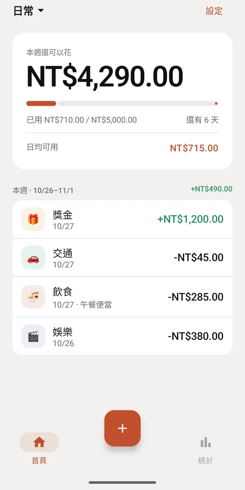
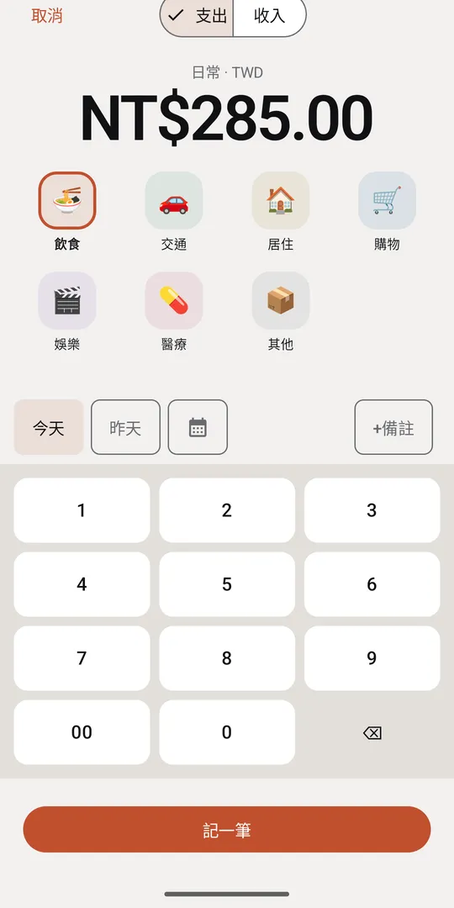
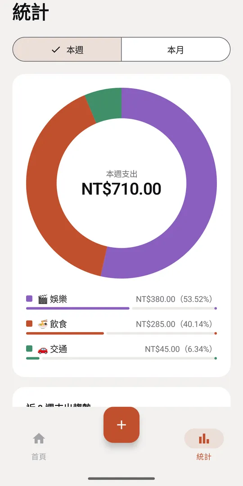
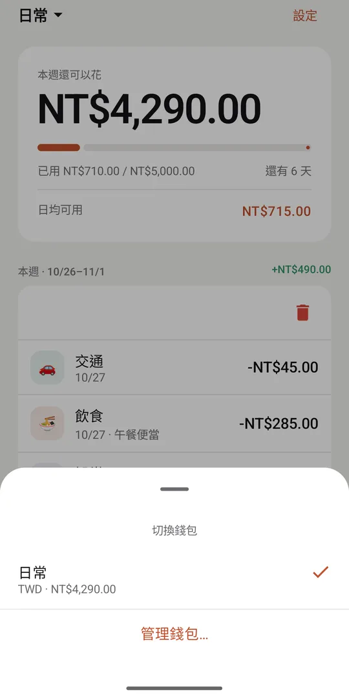
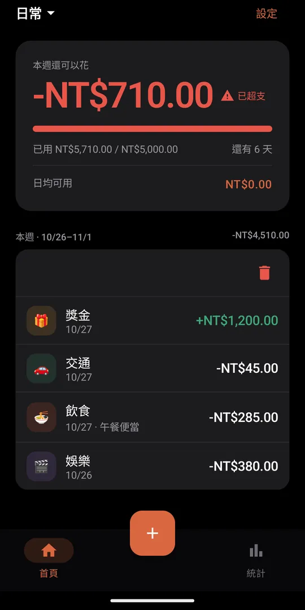
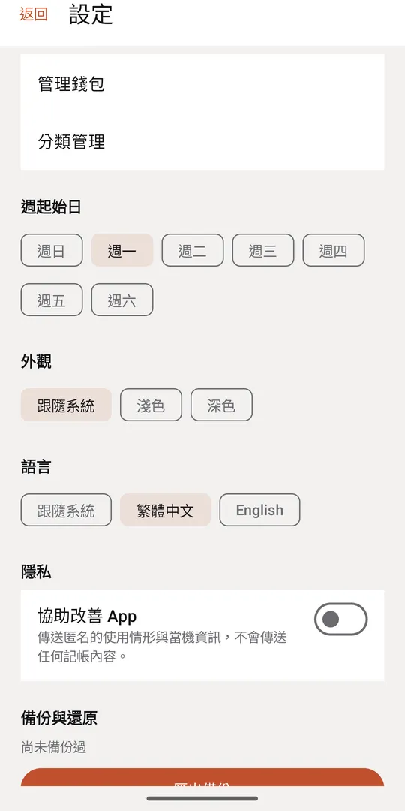

每週預算，一眼看懂
首頁最上方就是本週還能花多少、還剩幾天、平均每天能花多少。超支時清楚標示，每一週的收支淨額也列在週標題旁。
打開就知道這週還能花多少。
純本地、免登入、沒有廣告的 Android 記帳 App。
即將在 Google Play 推出沒有帳號、不用登入、沒有廣告。每一筆收支都只存在你自己的手機裡，不會上傳到任何地方。設定頁有一個預設關閉的「協助改善 App」，打開後也只會傳送匿名的使用情形與當機資訊，不含任何記帳內容。
首頁最上方就是本週還能花多少、還剩幾天、平均每天能花多少。超支時清楚標示，每一週的收支淨額也列在週標題旁。

自製數字鍵盤加上分類圖示，常用分類一次就看得到。可以選今天、昨天或任何日期，加上備註。

圓環圖顯示本週或本月各分類的支出比例，再用長條圖看近 8 週的趨勢。

日常、旅行、家庭分開記。每個錢包有自己的幣別，日圓就是日圓、新台幣就是新台幣，彼此不混在一起。

跟著系統切換深色模式；介面支援繁體中文與英文，也支援 TalkBack 螢幕閱讀器。

一鍵匯出備份檔，存到你想要的地方；換手機時匯入就能完整還原，App 每 7 天提醒你備份一次。
